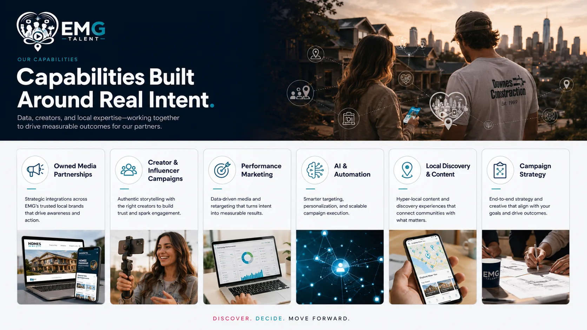

Owned Media Partnerships
Sponsored placements, featured providers, content integrations, and vertical partner programs.

EMG is not positioned as a generic agency. It is a system for owned media partnerships, creator campaigns, local discovery, AI utility, and measurable outcomes.
We build the path between attention and action—from the first useful answer to the call, form, visit, partnership, or sale that follows.
Sponsored placements, featured providers, content integrations, and vertical partner programs.
Creator strategy, roster packaging, campaign briefs, content lanes, and brand activations.
Pay-per-call, lead generation, traffic quality, source ranking, and outcome routing.
AI guides, consumer utility, decision support, alerts, follow-up, and operational workflows.
State and city pages, editorial guides, local intent pages, and answer-ready content systems.
Offer architecture, funnel design, conversion paths, partner flows, and reporting.
EMG can support awareness, trust, acquisition, local discovery, creator activation, and performance outcomes without forcing every opportunity into the same generic funnel.
Content teams know what people read. Sales teams know what buyers request. Creators know what communities believe. Performance teams know what converted. Too often, none of those truths meet.
Our capabilities are designed to close that distance. We help partners build demand, activate creators, develop owned audiences, generate qualified conversations, and understand the behavioral patterns connecting them.
We do not begin by prescribing a channel. We begin by locating the break in the journey—and then assembling the parts that can solve it.

We design around the point where a person gets stuck: too many options, too little context, no trusted voice, or no clear next step.
Sometimes the answer is an editorial property. Sometimes it is a creator partnership, an AI guide, a qualified call, or a new measurement layer. The channel follows the problem.
That discipline keeps the work coherent and makes each capability accountable to an outcome outside of itself.
EMG builds for both horizons: performance that can move now and infrastructure that grows more valuable with every cycle.
A campaign can generate calls. A property can continue ranking. A creator relationship can deepen. First-party signals can improve targeting. The best work does not disappear when the media flight ends.
We’ll determine which capability creates leverage and what should remain outside the scope.